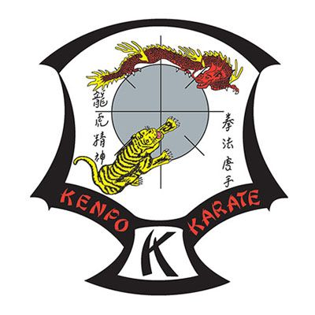
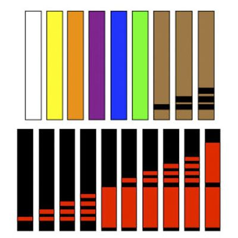
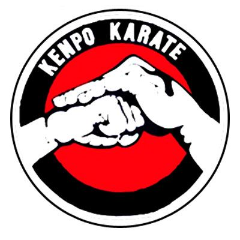
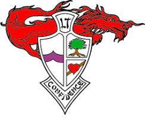

Simbolos representativos
Las siguientes son los símbolos más habituales y representativos de nuestro arte marcial:

El Escudo de Kenpo Karate
Creado en 1958 por Ed Parker y su hermano, simboliza el Kenpo Americano. Presenta una fusión entre el arte moderno y las tradiciones marciales chinas y japonesas. Cada detalle del escudo conlleva una significativa lección filosófica.

Cinturones en Kenpo Karate
El Kenpo Americano usa un sistema de cinturones de colores, para distinguir el grado y progreso de cada alumno. Los estudiantes comienzan en el cinturón blanco, amarillo, naranjo, púrpura, azul, verde, café tercer kyu, café segundo kyu, café primero kyu, negro primer dan hasta decimo dan.

Juramento de Kenpo Karate
El juramento o credo se ha convertido en un código aceptado por muchos artistas marciales. Fue escrito por el maestro Parker en 1957 y denota la forma de vida del artista marcial en el entorno actual.La llama
La Llama Internacional simboliza la iluminación y el crecimiento global del Kenpo Americano, con un enfoque en la difusión de las enseñanzas y valores del arte marcial en todo el mundo.
